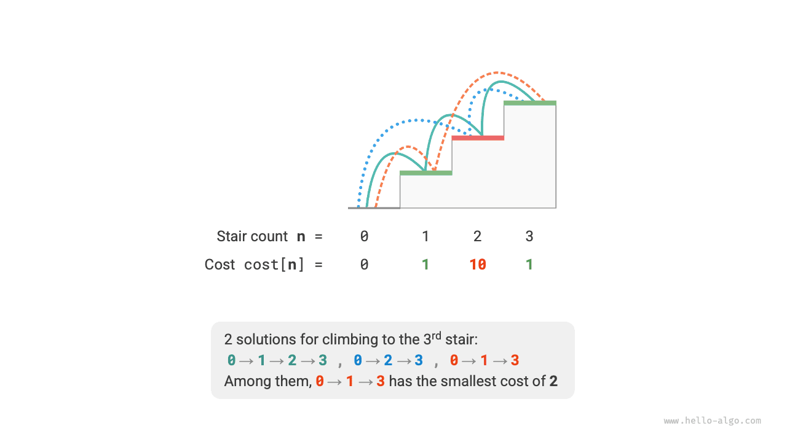
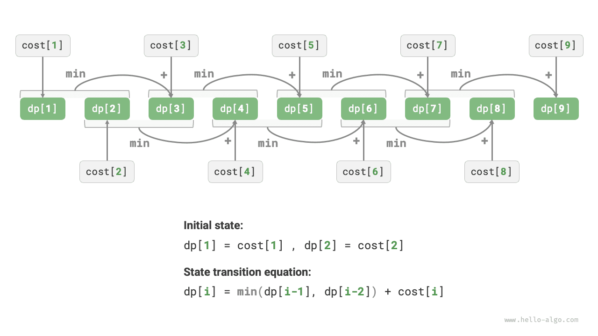
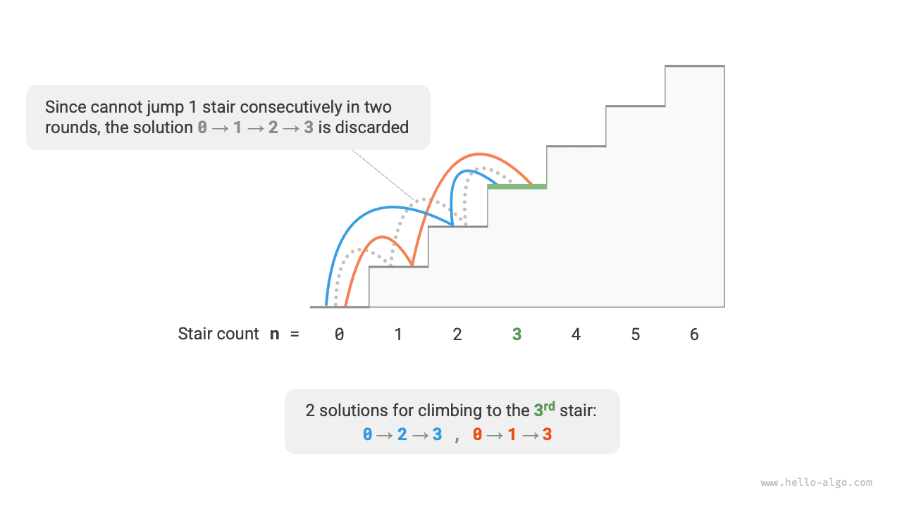
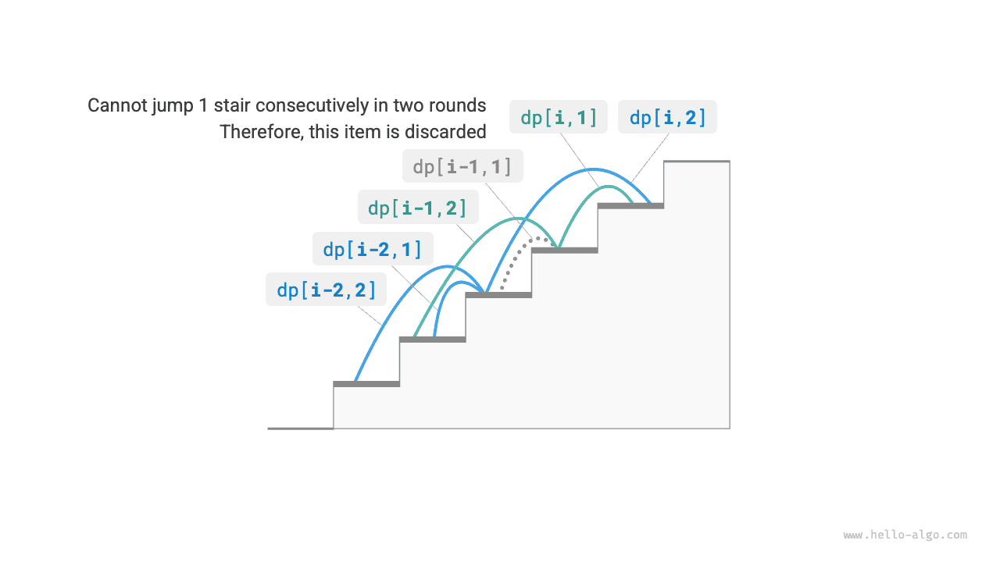

البرمجة الديناميكية
خصائص مسائل البرمجة الديناميكية
في القسم السابق، تعرّفنا على كيفية حل البرمجة الديناميكية للمسألة الأصلية عبر تفكيكها إلى مسائل فرعية. وفي الواقع، تفكيك المسائل الفرعية منهج خوارزمي عام، مع اختلاف مواطن التركيز في التقسيم والتغلب والبرمجة الديناميكية والتتبّع الرجعي.
- تقسّم خوارزميات التقسيم والتغلب المسألة الأصلية تعاودياً إلى عدة مسائل فرعية مستقلة حتى الوصول إلى أصغر المسائل الفرعية، وتدمج حلول المسائل الفرعية أثناء التراجع للحصول في النهاية على حل المسألة الأصلية.
- تُفكّك البرمجة الديناميكية المسائل تعاودياً أيضاً، لكن الفرق الرئيسي عن خوارزميات التقسيم والتغلب هو أن المسائل الفرعية في البرمجة الديناميكية مترابطة، وتظهر مسائل فرعية متداخلة كثيرة أثناء عملية التفكيك.
- تعدّد خوارزميات التتبّع الرجعي جميع الحلول الممكنة عبر التجربة والخطأ، وتتجنّب فروع البحث غير الضرورية عبر التقليم. ويتكوّن حل المسألة الأصلية من سلسلة خطوات قرار، ويمكننا اعتبار التعاقب السابق لكل خطوة قرار مسألة فرعية.
في الواقع، تُستخدم البرمجة الديناميكية عادةً لحل مسائل التحسين، وهي لا تحتوي على مسائل فرعية متداخلة فحسب، بل تتمتع أيضاً بخاصيتين رئيسيتين أخريين: البنية الفرعية المثلى وانعدام التأثير اللاحق.
البنية الفرعية المثلى
نجري تعديلاً طفيفاً على مسألة صعود الدرج لجعلها أكثر ملاءمة لعرض مفهوم البنية الفرعية المثلى.
صعود الدرج بأقل تكلفة
بمعطى درج، يمكنك صعود $1$ أو $2$ من الدرجات في المرة الواحدة، وكل درجة موسومة بعدد صحيح غير سالب يمثّل تكلفة الوقوف عليها. بمعطى مصفوفة أعداد صحيحة غير سالبة $cost$، حيث $cost[i]$ تمثّل تكلفة الدرجة $i$ و$cost[0]$ هو الأرض (نقطة البداية)، فما أقل تكلفة لازمة للوصول إلى القمة؟
وكما هو موضح في الشكل أدناه، إذا كانت تكاليف الدرجات الأولى والثانية والثالثة $1$ و$10$ و$1$ على الترتيب، فإن الصعود من الأرض إلى الدرجة الثالثة يتطلب أقل تكلفة مقدارها $2$.

لِتكن $dp[i]$ التكلفة المتراكمة للصعود إلى الدرجة $i$. وبما أن الدرجة $i$ لا يمكن أن تأتي إلا من الدرجة $i-1$ أو $i-2$، فإن $dp[i]$ لا يمكن أن يساوي إلا $dp[i-1] + cost[i]$ أو $dp[i-2] + cost[i]$. ولتقليل التكلفة، ينبغي اختيار الأصغر من القيمتين:
$$ dp[i] = \min(dp[i-1], dp[i-2]) + cost[i] $$
وهذا يقودنا إلى معنى البنية الفرعية المثلى: يُبنى الحل الأمثل للمسألة الأصلية من الحلول المثلى للمسائل الفرعية.
من الواضح أن هذه المسألة تمتلك بنية فرعية مثلى: فنحن نختار الأفضل من الحلين الأمثلين للمسألتين الفرعيتين $dp[i-1]$ و$dp[i-2]$، ونستخدمه لبناء الحل الأمثل للمسألة الأصلية $dp[i]$.
فهل تمتلك مسألة صعود الدرج من القسم السابق بنية فرعية مثلى؟ هدفها إيجاد عدد الطرق، وهو ما يبدو مسألة عدّ، لكن إذا غيّرنا السؤال إلى: «جد أكبر عدد من الطرق»، نكتشف على نحو مفاجئ أنه مع أن المسألتين قبل التعديل وبعده متكافئتان، فقد برزت البنية الفرعية المثلى: فأكبر عدد من الطرق للدرجة $n$ يساوي مجموع أكبر عدد من الطرق للدرجتين $n-1$ و$n-2$. لذلك فإن تفسير البنية الفرعية المثلى مرن تماماً ويتخذ معانٍ مختلفة في مسائل مختلفة.
وفقاً لمعادلة انتقال الحالة والحالتين الابتدائيتين $dp[1] = cost[1]$ و$dp[2] = cost[2]$، يمكننا الحصول على شيفرة البرمجة الديناميكية:
ويوضح الشكل أدناه عملية البرمجة الديناميكية للشيفرة أعلاه.

يمكن أيضاً تحسين هذه المسألة مكانياً، بالضغط من بُعد واحد إلى صفر بُعد، مما يقلل التعقيد المكاني من $O(n)$ إلى $O(1)$:
انعدام التأثير اللاحق
انعدام التأثير اللاحق أحد الخصائص المهمة التي تمكّن البرمجة الديناميكية من حل المسائل بفعالية. وتعريفه: بمعطى حالة معينة، فإن تطورها المستقبلي يرتبط بالحالة الحالية فقط ولا علاقة له بجميع الحالات السابقة.
وبأخذ مسألة صعود الدرج مثالاً، بمعطى الحالة $i$، ستتطور إلى الحالتين $i+1$ و$i+2$، المقابلتين للقفز $1$ درجة والقفز $2$ درجتين على الترتيب. وعند اتخاذ هذين الخيارين، لا نحتاج إلى النظر في الحالات السابقة للحالة $i$، إذ ليس لها تأثير في مستقبل الحالة $i$.
غير أن الوضع يتغير إذا أضفنا قيداً إلى مسألة صعود الدرج.
صعود الدرج مع قيد
بمعطى درج فيه $n$ درجة، حيث يمكنك صعود $1$ أو $2$ من الدرجات في المرة الواحدة، لكن لا يمكنك القفز $1$ درجة في جولتين متتاليتين. فكم عدد الطرق للصعود إلى القمة؟
وكما هو موضح في الشكل أدناه، لا توجد سوى $2$ من الطرق الممكنة للصعود إلى الدرجة الثالثة. أما المسار الذي يتضمن ثلاث قفزات متتالية بمقدار $1$ درجة فلا يحقق القيد، ولذلك يُستبعد.

في هذه المسألة، إذا كانت الجولة السابقة قفزة بمقدار $1$ درجة، فيجب أن تكون الجولة التالية قفزة بمقدار $2$ درجتين. وهذا يعني أن الخيار التالي لا يمكن تحديده بالاعتماد على الحالة الحالية وحدها (رقم الدرجة الحالية)، بل يعتمد أيضاً على الحالة السابقة (رقم الدرجة من الجولة السابقة).
وليس من الصعب ملاحظة أن هذه المسألة لم تعد تحقق انعدام التأثير اللاحق، كما تفشل معادلة انتقال الحالة $dp[i] = dp[i-1] + dp[i-2]$، لأن $dp[i-1]$ يمثّل القفز $1$ درجة في هذه الجولة، لكنه يتضمن كثيراً من الحلول التي «كانت الجولة السابقة فيها قفزة بمقدار $1$ درجة»، وهي لا يمكن أن تُحتسب مباشرةً في $dp[i]$ لتحقيق القيد.
لهذا السبب، نحتاج إلى توسيع تعريف الحالة: الحالة $[i, j]$ تمثّل الوقوف على الدرجة $i$ مع قفز الجولة السابقة $j$ من الدرجات، حيث $j \in {1, 2}$. ويميّز تعريف الحالة هذا بفعالية ما إذا كانت الجولة السابقة قفزة بمقدار $1$ درجة أو $2$ درجتين، مما يتيح لنا تحديد من أين جاءت الحالة الحالية.
- عندما قفزت الجولة السابقة $1$ درجة، لم يكن بإمكان الجولة التي قبلها إلا اختيار القفز $2$ درجتين، أي إن $dp[i, 1]$ لا يمكن أن ينتقل إلا من $dp[i-1, 2]$.
- عندما قفزت الجولة السابقة $2$ درجتين، كان بإمكان الجولة التي قبلها اختيار القفز $1$ درجة أو $2$ درجتين، أي إن $dp[i, 2]$ يمكن أن ينتقل من $dp[i-2, 1]$ أو $dp[i-2, 2]$.
وكما هو موضح في الشكل أدناه، في ظل هذا التعريف، يمثّل $dp[i, j]$ عدد الطرق للحالة $[i, j]$. وتصبح معادلة انتقال الحالة:
$$ \begin{cases} dp[i, 1] = dp[i-1, 2] \ dp[i, 2] = dp[i-2, 1] + dp[i-2, 2] \end{cases} $$

وأخيراً، أعِد $dp[n, 1] + dp[n, 2]$، حيث يمثّل مجموعهما العدد الإجمالي لطرق الصعود إلى الدرجة $n$:
في الحالة أعلاه، وبما أننا نحتاج فقط إلى النظر في حالة سابقة إضافية واحدة، لا يزال بإمكاننا جعل المسألة تحقق انعدام التأثير اللاحق عبر توسيع تعريف الحالة. غير أن بعض المسائل تتضمن «تأثيرات لاحقة» شديدة جداً.
صعود الدرج مع توليد العوائق
بمعطى درج فيه $n$ درجة، حيث يمكنك صعود $1$ أو $2$ من الدرجات في المرة الواحدة. كلما وصلت إلى الدرجة $i$، يضع النظام تلقائياً عائقاً على الدرجة $2i$، ولا يُسمح لأي جولة لاحقة بالقفز إلى الدرجة $2i$. فمثلاً، إذا قفزت الجولتان الأولى والثانية إلى الدرجتين $2$ و$3$، فلن يمكنك بعد ذلك القفز إلى الدرجتين $4$ و$6$. فكم عدد الطرق للصعود إلى القمة؟
في هذه المسألة، تعتمد القفزة التالية على جميع الحالات السابقة، لأن كل قفزة تضع عوائق على درجات أعلى وتؤثر في القفزات المستقبلية. وبالنسبة إلى مثل هذه المسائل، يصعب غالباً حلّها بالبرمجة الديناميكية.
في الواقع، كثير من مسائل التحسين التوافقي المعقدة (مثل مسألة البائع المتجول) لا تحقق انعدام التأثير اللاحق. وبالنسبة إلى مثل هذه المسائل، نستخدم عادةً طرقاً أخرى، مثل البحث الاستدلالي والخوارزميات الجينية والتعلّم المعزز، للحصول على حلول مثلى محلياً قابلة للاستخدام في زمن محدود.